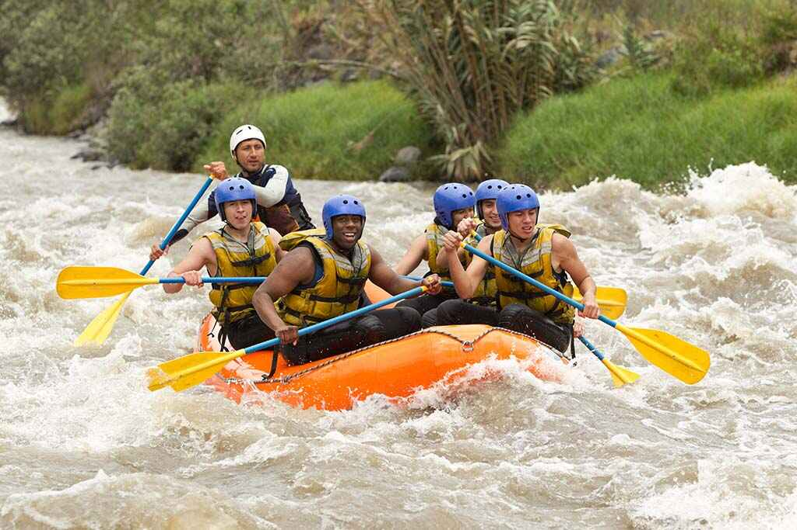
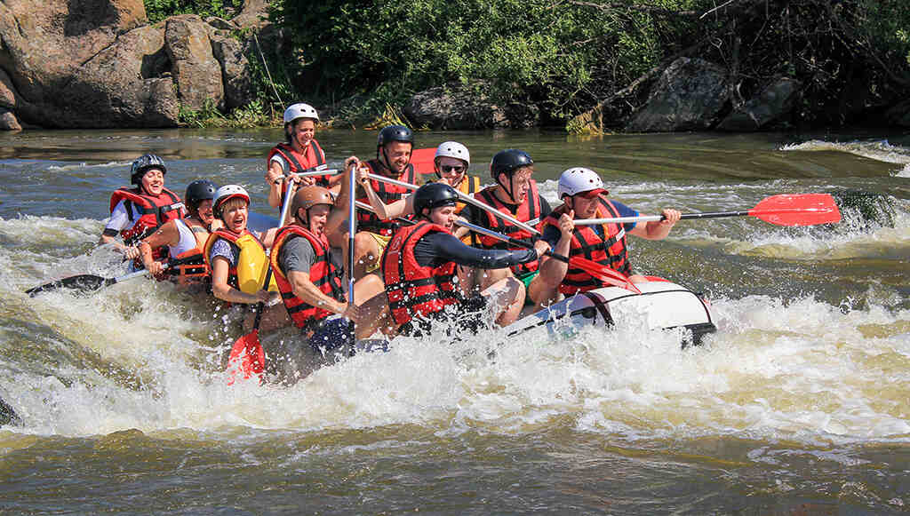
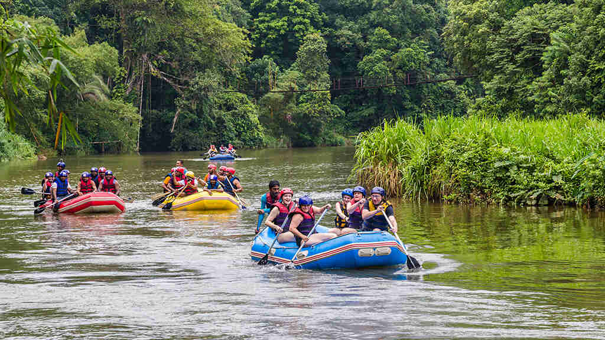
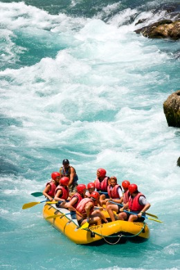
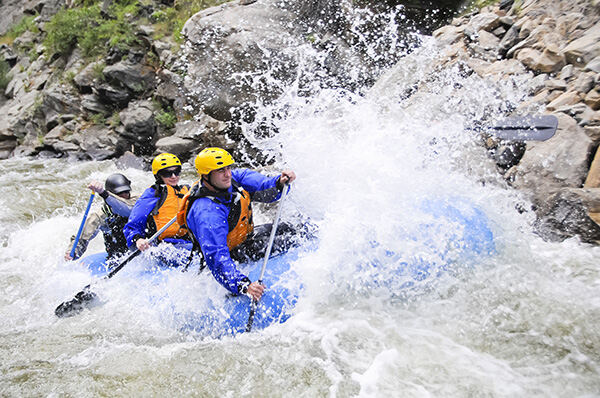

"O rio não é conquistado; ele é respeitado, compreendido e desfrutado. Nós somos apenas seus convidados."


"O rio não é conquistado; ele é respeitado, compreendido e desfrutado. Nós somos apenas seus convidados."

Tudo começou no verão de 2018. Mateo, um guia de rio certificado com milhares de quilômetros navegados; Sofia, uma engenheira ambiental apaixonada por fotografia; e Lucas, um administrador de empresas que odiava ternos e escritórios, estavam acampando às margens do Rio Bravo do Norte, um caudaloso rio famoso por seus cânions imponentes e corredeiras perigosas de Classe IV.
Enquanto secavam as roupas ao redor da fogueira e tomavam um café forte, Lucas olhou para o rio e disse: "As pessoas pagam fortunas para ir a parques de diversões artificiais, quando a verdadeira adrenalina, aquela que faz você se sentir vivo, está fluindo bem diante de nós. Deveríamos compartilhar isso com o mundo." Naquela mesma noite, entre risadas e esboços em um guardanapo de papel, nasceu a "Correndeza Máxima".




